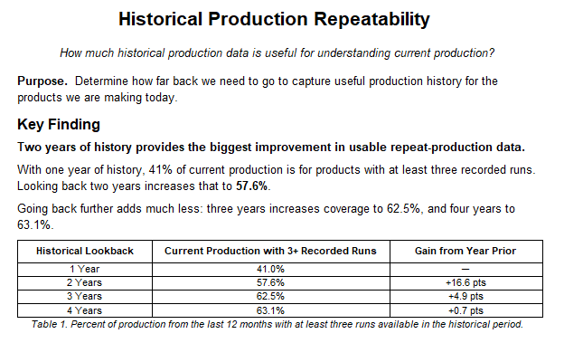
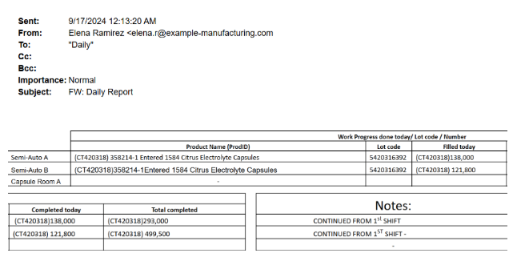

01
Mature products
Use sufficiently recent, comparable runs while recognizing established performance and remaining variation.
MANUFACTURING ANALYTICS · FORECASTING · ACTIVE PROJECT
I am reconstructing semi-structured production history to understand factory learning, improve schedule forecasts, and create a durable operational data stream for continuous improvement.
THE QUESTION
I proposed this project because production dates were shaping decisions far beyond the factory floor. Forecast accuracy affected revenue planning, customer launches and restocking expectations, purchasing decisions, staffing, and the timing of work across the organization.
Historical production seemed like the natural foundation for better estimates. But before using it to predict future runtimes, I needed to know whether the history was deep, consistent, and comparable enough to support that purpose.
THE HYPOTHESIS
Earlier product-maturity and on-time-delivery studies suggested that manufacturing performance improves through repetition. Early runs may contain unfamiliar processing behavior, setup decisions, troubleshooting, or coordination needs that become better understood over time.
That raised the question at the center of the model: should a first-time product be expected to perform like a product the factory has manufactured many times?
If the factory experiences a meaningful learning curve, product maturity belongs inside the forecast.
THE FIRST INVESTIGATION
I compared historical lookback periods to determine how much useful repeat-production evidence each additional year provided for products manufactured in the current 12-month period.
Analytical Output · ERP Repeatability Study
The initial study compared how much usable exact-product history became available at each lookback period before the deeper production-report reconstruction began.

DECISION EXPLORER · HISTORICAL SCOPE
Explore the documented result: select a lookback period to see how much current production gains usable exact-product history.
57.6%
of current production is associated with products having at least three observed runs.
Largest practical gain: +16.6 percentage points over one year.
Two years produced the largest practical gain. Extending the lookback further added relatively little exact-product coverage—and risked introducing older operating conditions that might no longer represent the factory.
WHAT CHANGED
I had expected the model to rely heavily on repeated runs of the same product. Instead, I found that a substantial share of production involved novel or short-lived items: products manufactured once or twice and never repeated, or repeated only after long gaps.
Exact-product history alone could not support the forecast. The model would need to distinguish mature products with direct evidence from novel products that require comparison to structurally similar work.
01
Use sufficiently recent, comparable runs while recognizing established performance and remaining variation.
02
Select analogs using process characteristics and attach greater uncertainty when direct evidence is sparse.
THE EMERGING MODEL
01
Use the product's own recent runs when enough comparable evidence exists.
02
Distinguish early learning from established production performance.
03
When direct history is limited, compare dosage form, batch size, equipment, process steps, and material behavior.
04
Fall back to production-stage evidence when no close comparison exists.
05
Communicate evidence strength and prediction ranges instead of giving every estimate equal authority.
FORECASTING EXPLORER
Choose a product maturity stage to see how the forecast should select evidence and express confidence.
RUN 01
The product has never been manufactured before, so its own average does not exist.
RECONSTRUCTING THE EVIDENCE
Execution details were distributed across ERP records and years of daily production-report emails. Those reports contained equipment, quantities, progress, delays, and timing, but they were written for immediate communication, not longitudinal analysis.
A single run could appear across multiple updates as it moved through blending, encapsulation, tableting, or packaging. Terminology, equipment names, units, shifts, and reporting detail also changed over time.
01
Match updates to the correct production job and stage.
02
Standardize process, equipment, quantity, and unit terminology.
03
Combine progress updates into governed production episodes.
04
Separate observed execution shifts from elapsed calendar time.
05
Retain uncertainty when the source does not justify a definitive claim.
06
Create evidence that can support maturity and runtime analysis.
Source Evidence · Daily Production Report
The business was already recording equipment, products, lot codes, daily and cumulative quantities, completion status, and shift notes. The challenge was turning those uneven report fields into comparable production history.

EXHIBIT 03 · RECORD TRANSFORMATION
The interpretation adds structure without pretending the source says more than it does.
SOURCE · DAILY EMAIL
“CT running on machine 2. About 6 barrels completed. Should finish tomorrow.”
BUILDING A BETTER DATA STREAM
Reconstructing the history exposed both what the company could learn from its existing reports and what those reports consistently failed to capture. Those findings will inform a redesign of daily production reporting so future updates are entered in a more structured and consistent form.
The redesigned process can support daily coordination while also creating a durable data stream for production KPIs, delay and variation analysis, maturity trends, and continual refinement of forecasting assumptions.
01 · OPERATE
Capture consistent execution evidence as work happens.
02 · LEARN
Measure outcomes, variation, delays, and factory learning.
03 · IMPROVE
Use each completed run to strengthen future estimates.
RIGHT-SIZED MANUFACTURING INTELLIGENCE
For a smaller manufacturer, the most practical path was not to recreate every function of a large manufacturing execution system. It was to identify the intelligence the business actually needed and unlock it from ERP records, daily reports, and operational knowledge the company was already producing.
This right-sized approach creates a foundation for more reliable forecasting, maturity-aware runtime estimates, consistent production KPIs, and continuous improvement—at a scale proportionate to the company's resources and operational maturity.
THE JUDGMENT
The most important decision was not to move directly from raw records to a finished prediction. The repeatability analysis showed a structural weakness: much of the company's future work will not have enough exact-product history to support a dependable product-level average.
Instead, I am building the foundation needed to distinguish strong evidence from weak analogy, understand how the factory learns, and make the confidence behind each forecast visible.
THE NEXT LAYER
Current work is focused on reconstructing comparable runs and validating quantity, unit, and runtime interpretations. The next phase will test how learning differs by production stage, which attributes identify useful analogs, and how prediction ranges should be expressed.
Those findings will eventually feed the Advanced Planning & Scheduling system, where evidence-based runtimes can become actionable production plans.
NEXT CASE STUDY
Advanced Planning & Scheduling System →